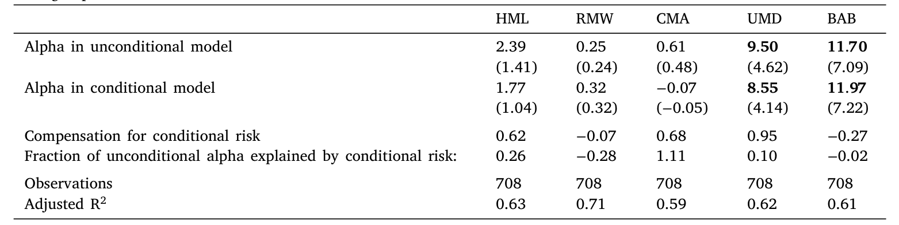
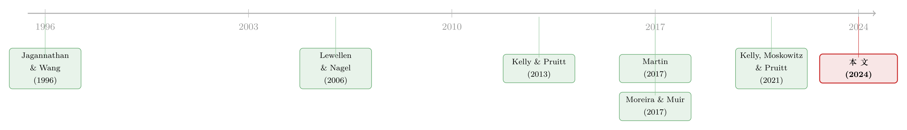

时变的 beta，被低估了二十年的风险
本文读的是 Gormsen & Jensen (2024, Journal of Financial Economics)：人们普遍相信「beta 会随时间变化」这件事小到可以忽略，因而条件 CAPM 解释不了异象——但作者证明，一旦把近十年对市场风险溢价、市场方差波动性的新认识放进来，条件风险 (conditional risk) 在理论上能解释多达 5 个百分点的年化收益，几乎等于整个股权溢价；实证上，它能吃掉价值、投资、动量等主要因子在近年约 2 个百分点的 alpha。
1 引言：一个被「判了死刑」的解释
资产定价里有一类问题，几乎已经盖棺定论，以至于后来的人懒得再碰。
「条件 CAPM 能不能解释横截面异象」就是这样一个问题。它的逻辑听起来很美：如果一只资产偏偏在「市场风险溢价高、或市场方差低」的时候 beta 也高，那它就承担了更多真正令人难受的风险，理应获得补偿。换句话说，资产的平均超额收益里，有一部分并非真正的 alpha，而是来自 beta 随时间起伏所带来的条件风险。
这个想法在二十年前被 Lewellen 和 Nagel (2006)（下称 LN）做了一次几乎是决定性的检验。他们的结论干脆利落：条件 beta 的时间变动太小了，小到根本无法解释价值、动量这些大异象的 alpha。一篇被引上千次的论文，把这条路堵死了大半。从那以后，「不要用 conditional CAPM 去洗白 alpha」几乎成了行业共识。
但本文作者偏偏要回到这个被判了死刑的问题上。理由也很朴素：LN 当年依赖的那些「条件矩到底有多波动」的认识，在过去十年被彻底刷新了。
首先，Kelly 和 Pruitt (2013)、Martin (2017) 都拿出证据说，市场的股权溢价「极度波动」(extremely volatile)，而且在很短的时间尺度上就剧烈起伏——这和过去「预期收益只在长周期里缓慢摆动」的图景完全不同。接着，Kelly et al. (2021) 又指出，动态交易策略的条件 beta 即便在很短的窗口里也能高度波动。于是一个自然的问题浮现出来：如果输入变量的波动性比 LN 当年假设的大得多，那条死路，会不会其实是活的？
（关于「同样的下跌、在平静市里更让人心痛」这一条件风险的定价核直觉，本博客另有一篇可对照阅读：《定价核的两副面孔》。）
2 先算一个上限：条件风险「最多」能解释多少
要重审这个问题，作者没有一上来就跑回归，而是先做了一件更聪明的事：在理论上算出条件风险的「天花板」。如果连天花板都低，那实证就不用做了。
条件 CAPM 本身只是一句话——资产的条件期望超额收益等于条件 beta 乘以条件市场溢价：
$$E_t[r^i_{t+1}] = \frac{\text{cov}_t(r^i_{t+1};\, r^m_{t+1})}{\text{var}_t(r^m_{t+1})}\, E_t[r^m_{t+1}]$$
关键的一步在于：投资者真正看到的是无条件的平均收益。对上式取无条件期望，并把「平均 beta」和「shock-beta」\(\tilde\beta = \text{cov}(r^i_{t+1};\,\tilde r^m_{t+1})/\text{var}(\tilde r^m_{t+1})\) 的关系代进去（其中 \(\tilde r^m_{t+1}=r^m_{t+1}-E_t[r^m_{t+1}]\) 是对市场的冲击），就能把无条件收益拆成两块：
$$E[r^i_{t+1}] = \tilde\beta\, E[r^m_{t+1}] + \underbrace{\text{cov}\big(\beta_t;\, E_t[r^m_{t+1}] - b\,\text{var}_t(\tilde r^m_{t+1})\big)}_{\text{Conditional Risk}}$$
前一项是用静态 shock-beta 给市场风险定价后「应得」的部分；后一项那个协方差，才是真正意义上的条件风险。其中
$$b = \frac{E[r^m_{t+1}]}{\text{var}(\tilde r^m_{t+1})}$$
是无条件的风险价格 (unconditional price of risk)，经验上大约等于 2.5。
这个协方差还能再拆成两半，这正是全文的命门所在：
于是问题被翻译成两个可量化的对象：市场择时和波动率择时。前者由 beta 与溢价的相关性驱动，后者由 beta 与方差的相关性驱动、并被那个约等于 2.5 的 \(b\) 放大。
作者用 LN 当年的 beta 波动率假设、配上 Kelly-Pruitt 对溢价波动率的新估计，得到的上限相当可观：在最激进的参数下（beta 波动率 0.4、溢价波动率 0.6、相关系数取 1），单看市场择时就能解释 2.9 个百分点的年化收益；而单看波动率择时，最激进时可达 7 个百分点。作为参照，Fama-French 模型里平均一个因子的无条件 CAPM alpha 也就 3.7 个百分点，整个股权溢价不过 5–6 个百分点。
3 反转：两种择时，到底是互相抵消还是携手发力？
那既然单项就这么大，为什么 LN 当年算出来的总效应却那么小？
这正是全文最漂亮的反转。然后我们要问：市场择时和波动率择时加在一起会怎样？
过去的研究有一个根深蒂固的论断：市场风险溢价和市场方差是正相关的——溢价高的时候方差往往也高。一旦如此，市场择时（要 beta 与溢价同向）和波动率择时（要 beta 与方差反向）就被迫互相打架：一只资产对一个的暴露为正，对另一个就必然为负。两者机械地抵消，总的条件风险自然就被压回到很小——这就是 LN 结论的算术根源。
但真正关键的一步在于 Moreira 和 Muir (2017) 的发现：溢价和方差并非完美相关。本文作者顺着这条线往下走，在自己的主测度下进一步发现——条件市场溢价与条件方差几乎不相关 (close to uncorrelated)。
不相关意味着什么？意味着两种择时不必再互相抵消，而是可以携手发力。在「beta 与溢价相关 0.5、beta 与方差相关 −0.5、而溢价与方差彼此不相关」这组并不极端的假设下，市场择时和波动率择时联合起来能解释多达 5 个百分点的年化收益——这几乎就是整个股权溢价。
同一个直觉还能从夏普比率上看出来：把市场仓位按「条件溢价/条件方差」之比来缩放、做一个择时的市场组合，其夏普比率在样本里达到 0.68，而买入持有市场只有 0.34。条件矩里确实藏着真金白银。
下面这张表把这套上限计算完整地铺开了：

Table 9: reports results from two sets of regressions. In the first
到这里，作者只证明了一件事——条件风险在理论上足够大。它到底大不大，仍是一个实证问题。
4 把条件风险做成一个「可交易的因子」
要做实证，得先解决一个麻烦：条件 beta 看不见、也难估。本文的巧思在于——你根本不需要观测条件 beta，只需要条件 beta 中被「条件市场溢价和方差」张成的那一部分。作者把它直接写成一个因子：
$$c_{t+1} = \tilde r^m_{t+1}\,(b_t - b)$$
其中 \(b_t = E_t[r^m_{t+1}]/\text{var}_t(\tilde r^m_{t+1})\) 是条件风险价格。直觉很清楚：\(c_{t+1}\) 就是一个「在条件风险价格高于其无条件均值时、对市场冲击暴露更大」的市场择时策略。于是条件风险被彻底地浓缩成一个协方差：
$$E[r^i_{t+1}] = \tilde\beta\, E[r^m_{t+1}] + \underbrace{\text{cov}(r^i_{t+1};\, c_{t+1})}_{\text{Conditional Risk}}$$
换句话说，一只资产的无条件 alpha 里有多少来自条件风险，完全可以用它对这个 \(c_{t+1}\) 因子的暴露来度量。把 \(c_{t+1}\) 当作一个普通因子塞进时间序列回归，回归截距的下降，就是条件风险吃掉的那部分 alpha。
5 数据与识别
接着，一个自然的问题是：\(b_t\) 里的条件市场溢价从哪来？
这是整套方法的命脉。作者刻意选用能捕捉极短期溢价变动的估计——因为正如前文所说，新研究的核心信息恰恰在于短周期的剧烈起伏，而滚动 beta 这种慢变量是抓不到的。主分析采用 Kelly 和 Pruitt (2013) 的三阶段估计量，原因有三：它能在样本里所有国家、整段时间上实现；它被证明在样本内外都能很好地预测收益；而且它比传统的 CAPE 倒数估计明显更波动——前者标准差 0.5%，后者只有 0.3%，两者相关系数 0.5，但 Kelly-Pruitt 在短周期上的变动要丰富得多。条件方差则假设服从一个 AR(1) 过程来估计。
实证实现用的是缩放因子 (scaled factors)：工具变量取条件市场收益、条件市场方差，以及检验资产的滚动 beta（理论上前两者就够，滚动 beta 只是为测度不完美兜底）。样本上，作者用了一个跨 23 个国家的全球样本，美国主样本覆盖 1964–2022。
6 主要结果：约四分之一的价值 alpha，被条件风险吃掉
于是反转落到了数字上。
先看被研究得最透的价值因子 HML。在美国 1964–2022 全样本里，控制条件风险解释了大约 1.25 个百分点的年化收益，相当于该因子总 alpha 的约 27%；而作为对照，控制无条件市场暴露只能解释区区 0.86 个基点。注意这个鲜明的对比：条件风险对 alpha 的影响，远大于无条件风险——这恰恰说明，要老老实实地给市场风险定价，就不能忽略 beta 的时变。
然后是「近年更明显」这个判断。作者把视线移到 post-1996 样本——这是股权溢价被记录为「特别波动」的时期，也几乎完全落在最早那批条件风险研究的样本之外。在这段样本里，条件风险对主要因子普遍能解释约 2 个百分点的年化 alpha：它几乎吃掉了价值因子的全部 alpha，吃掉投资因子约一半，动量约 30%，赌 beta（betting-against-beta）约 10%。
跨国证据同样支持。在法国、德国、瑞典，条件风险几乎解释了整个价值溢价（这些国家约 2 个百分点）；在全球合并样本里，它解释了价值策略约一半的 alpha。更一般地，除盈利因子外，所有主要因子都正向载荷于这个条件风险因子，平均解释了它们无条件 CAPM alpha 的约 18%。
最后，作者还用两个专门的新因子去分别检测市场择时与波动率择时，发现绝大多数股票因子两者兼有——也就是说，与过去「两种择时必然抵消」的论断相反，它们在数据里是协同发力的。而这之所以可能，技术上正是因为股权溢价和方差并非完美相关（这一点又回到 Moreira-Muir）。
7 但别误会：条件 CAPM 依然被干净利落地拒绝
讲到这儿，必须踩一脚刹车，否则容易把本文读反。
条件风险大归大，条件 CAPM 本身依旧很容易被拒绝。当作者控制了条件风险之后，那个由主要股票因子张成的切点组合 (tangency portfolio) 依然高度显著。从这个意义上说，本文其实强力支持了 LN 的核心论点——条件 CAPM 解释不了横截面。
这里有一个微妙但重要的区分：拒绝条件 CAPM，不等于可以无视条件风险。在大量因子分析里，我们本来就需要控制市场风险；而要把市场风险控制干净，即便 CAPM 本身定价不完美，也必须把 beta 的时变算进去。本文的贡献不是「拯救 CAPM」，而是「告诉你在做因子分析时，控制条件市场风险比控制无条件市场风险更要紧」。
8 文献脉络
把这条线索拉直来看会更清楚。条件 CAPM 的实证根在 Jagannathan 和 Wang (1996)——他们率先用时变 beta 去解释横截面。真正把它「证伪」的是 Lewellen 和 Nagel (2006)：在当时对条件矩波动性的认识下，他们论证时变 beta 的效应小到可以忽略，这成了后续二十年的默认结论。

转机来自对「条件矩到底有多波动」的重新测量：Kelly 和 Pruitt (2013) 提供了一个高频、可全球实现、预测力强的市场溢价测度；Martin (2017) 从期权价格里读出股权溢价「极度波动」；Moreira 和 Muir (2017) 指出溢价与方差并非完美相关——这一条恰恰拆掉了「两种择时必然抵消」的旧论断；Kelly et al. (2021) 又证明动态策略的条件 beta 在短周期上高度波动。本文 (2024) 站在这些新测度的肩膀上，重新计算了条件风险的上限、并用最新方法把它做成可交易的因子，给二十年前那个「死刑判决」补上了一个重要的脚注。（这条「贴现率/预期收益时变」的大主题，可一并参见《贴现率：资产定价的中心议题》；与 beta 异象、择时直接相关的另一篇是《波动率之谜，藏在 beta 异象的「时机」里》。）
评论与延伸（Q&A + 研究方向）
(a) 几个可能的疑问
Q：这篇文章是不是在「推翻」Lewellen-Nagel？
不是，恰恰相反。本文明确支持 LN 的主结论——条件 CAPM 解释不了横截面，切点组合在控制条件风险后依然显著。它修正的只是 LN 的一个附带论断：条件风险的量级小到可以忽略。本文说，量级其实不小，只是它救不活 CAPM 而已。
Q：「条件风险」和普通的「时变 beta」有什么区别？
关键在于哪一部分的 beta 时变才被定价。本文证明，你不需要观测全部的条件 beta，只需要 beta 中被「条件市场溢价和条件方差」张成的那一部分；其余的 beta 波动对无条件 alpha 没有贡献。这就是因子 \(c_{t+1}=\tilde r^m_{t+1}(b_t-b)\) 的意义。
Q：为什么旧研究算出来的效应那么小？
因为旧论断认为市场溢价与方差正相关，导致市场择时与波动率择时机械抵消。本文（接着 Moreira-Muir）发现两者其实接近不相关，抵消消失，联合效应被释放到最多
5个百分点。
Q：结果会不会只是 Kelly-Pruitt 这个测度「太能预测」造出来的？
这是最该担心的点。作者也用 Boguth et al. (2011) 和 LN 自己的方法做了替代实现，在近年样本里同样得到「条件风险作用更大」的结论，量级相近——这增强了稳健性。但作者也坦承：用上最好的溢价与方差估计，对结果至关重要。换句话说，结论对「输入测度的质量」是敏感的。
Q：那个 b≈2.5 的无条件风险价格为什么这么重要？
因为波动率择时项被 \(b\) 整个放大了一遍。由于方差和溢价的波动幅度差不多，乘上
2.5后，波动率择时的潜在效应反而比市场择时更大（单项最高7vs2.9个百分点）。\(b\) 的估计偏差会直接传导到结论的量级上。
Q：为什么偏偏盈利（profitability）因子不吃这一套？
在全球样本里，除盈利外的主要因子都正向载荷于条件风险因子，唯独盈利不显著。文中没有给出强机制；这本身就是个值得追的线索——盈利因子的收益结构可能与「市场择时/波动率择时」的暴露天然正交。
(b) 几个可能的研究问题与提案
1. 公司债市场里的条件风险
【经济故事】公司债收益对市场（或信用利差）的 beta 高度时变：危机来临时利差暴走、方差飙升，债券的条件 beta 往往同步走高。若把本文的 \(c_{t+1}\) 因子移植到信用市场，信用利差异象里有多少其实是「条件信用风险」而非真 alpha？ 【可行性】中。所需数据：TRACE 成交、Merrill/ICE 利差指数；识别上需要一个可信的「条件信用溢价」测度（可仿 Kelly-Pruitt 在利差上做横截面投影）。难点在于债券的非同步交易会污染 beta 估计，需用成交加权或区间收益处理。
2. 外资持有人与条件 beta 的国别差异
【经济故事】本文发现法、德、瑞典的价值溢价几乎被条件风险全部解释，而美国只有约四分之一。一个猜想是：外资持有比例高的市场，其条件 beta 对全球市场溢价的暴露更不稳定，因而条件风险更大。 【可行性】中到低。所需数据：各国股票的外资持股（如 FactSet/Worldscope 机构持股）、本文的跨国因子。识别上需要把「外资份额」当作横截面/时序变差来源，但内生性强（外资偏好本就与因子暴露相关），更适合做描述性关联而非因果。
3. 流动性择时是不是第三种「择时」？
【经济故事】本文把条件风险拆成市场择时 + 波动率择时。若资产的 beta 还系统性地在「市场流动性枯竭」时升高，那这是否构成第四象限的、独立于前两者的条件风险来源？ 【可行性】高。可直接在本文框架里再加一个以流动性指标（如 Pastor-Stambaugh、Amihud 聚合）为条件变量的缩放因子，看主要异象是否对它有额外载荷。数据现成，方法是本文方法的直接扩展。
4. 把「估计误差」诚实地放进上限计算
【经济故事】本文的
5个百分点上限，建立在对溢价、方差、beta 三组矩的点估计之上。但这些矩本身有相当的估计不确定性。如果用 bootstrap 或贝叶斯方法把不确定性传导进去，那个「天花板」的置信区间有多宽？ 【可行性】高。纯方法性工作，数据与本文相同，只需在量化步骤外面套一层不确定性传播。结论若稳健，会大大增强本文说服力；若不稳健，则是一个重要的警示。
我的判断
本文最漂亮的地方，是把一个看似已经定论的问题，重新还原成「上限 + 实证」两步，并精准地指出旧结论的算术软肋——两种择时之所以被认为可忽略，全靠「溢价与方差正相关」这一条假设；一旦它松动，整个结论就翻盘。这是典型的「不是发现了新数据，而是想清楚了旧逻辑」的好工作。把条件风险浓缩成一个可交易因子 \(c_{t+1}\)，更是给后人留下了一件趁手的工具。
但我对识别有两点保留。其一，结论对「条件溢价测度」高度依赖，而 Kelly-Pruitt 测度本身的样本内预测力强、样本外是否同样可靠仍有争议——一旦换用更保守的溢价估计，那 2 个百分点可能会缩水。其二，全球样本里国别差异巨大（法德瑞典几乎全解释、美国只有四分之一），文中对这种异质性的机制解释偏弱，让人担心部分跨国结果是测度质量参差造成的假象。
接下来我最想看到的，是把估计不确定性诚实地传播进那个「5 个百分点」的上限里，给出一个置信区间；以及把这套框架搬到公司债与信用市场——那里 beta 的时变更剧烈、条件风险理应更大，却几乎没人用这套语言认真算过。
参考文献
Boguth, Oliver, Carlson, Murray, Fisher, Adlai, Simutin, Mikhail (2011). Conditional risk and performance evaluation: Volatility timing, overconditioning, and new estimates of momentum alphas. Journal of Financial Economics 102(2), 363–389.
Fama, Eugene F., French, Kenneth R. (1993). Common risk factors in the returns on stocks and bonds. Journal of Financial Economics 33(1), 3–56.
Gormsen, Niels Joachim, Jensen, Christian Skov (2024). Conditional risk. Journal of Financial Economics 162, 103933.
Jagannathan, Ravi, Wang, Zhenyu (1996). The conditional CAPM and the cross-section of expected returns. Journal of Finance 51(1), 3–53.
Kelly, Bryan, Pruitt, Seth (2013). Market expectations in the cross-section of expected values. Journal of Finance 68(5), 1721–1756.
Kelly, Bryan T., Moskowitz, Tobias J., Pruitt, Seth (2021). Understanding momentum and reversal. Journal of Financial Economics 140(3), 726–743.
Lewellen, Jonathan, Nagel, Stefan (2006). The conditional CAPM does not explain asset-pricing anomalies. Journal of Financial Economics 82(2), 289–314.
Martin, Ian (2017). What is the expected return on the market? Quarterly Journal of Economics 132, 367–433.
Moreira, Alan, Muir, Tyler (2017). Volatility-managed portfolios. Journal of Finance 72(4), 1611–1644.